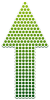
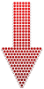
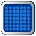

Sobre ...
Acionar
Cronômetro
Pausar
Reconfigurar
(
Reset
)
Tamanho do
Cronômetro
Aumentar
Diminuir
Fonte do
Cronômetro
- Padrão -
LCD
Comic Sans
Impact
Arial
Tahoma
Times
Courier New
Broadway
Verdana
Virtual DJ
Troca Cor
de Fundo
- Padrão -
Verde
Amarela
Laranja
Vermelha
Violeta
Ponto de
Parada
Tamanho do
Relógio
Aumentar
Diminuir
 
